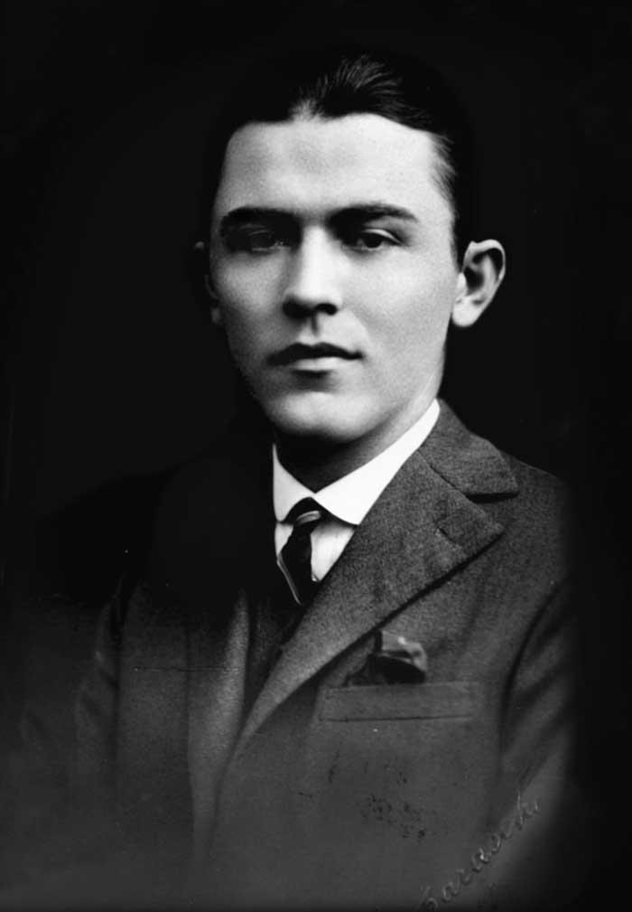

27 Steps - Tibi Ușeriu
The autobiography of Tibi Ușeriu is the first book that pops into my mind and I find at the top of my tongue when asked about my favorite book. Maybe I read it at the eternal age of sixteen or maybe because at that moment it became my little guide, the book that marked me.
I stole it from my mother. She, in turn, had borrowed it from one of her colleagues. I read it before she did. I devoured all 214 pages in a single day. I shed the first tear when I realized I couldn’t keep it, and a second when I couldn’t find it in any bookstore in Chișinău at the time. I drove everyone crazy with this book—until my cousin, equally passionate about a good read, finally bought it from me in Iași.
At its core, the book follows Tibi Useriu’s journey to the 6633 Arctic Ultra race, alongside the demons and memories of his parallel lives that accompany him. It’s an almost unreal story, yet one that deeply inspires. With a subtle humor, uniquely Romanian and elegant, the book feels like sitting over coffee one morning with a friend who recounts his most lunatic dream. And just when you think he’s teasing you and that the stories are pure imagination, you find yourself celebrating the small victories, feeling the fears that creep into your bones, and laughing along with him…
I fell in love with this book because it taught me to be brave, stubborn, to own my mistakes, and to keep going no matter what. At sixteen, when I faced my first real choice about the future, the pressure felt lighter. A school profile or a college shouldn’t define you. At worst, you end up with a valuable lesson. Someone should have told me that back then. For this lesson, I am grateful.
Invitation to the waltz - Mihail Drumeș
The book of
Mihail Drumeș

That’s what a good book does, isn’t it? It awakens your emotions, makes you question yourself. A love story without vulgarity, imbued with a rare sensitivity. “In fact, great passions remain unknown; they are consumed in anonymity.” (- M. Drumeș) Having the chance to peek, from behind the curtain, at such a lightning-fast, self-destructive, relentless, passionate experience is a privilege. Such a book deserves to be contemplated, analyzed, debated. Love—in all its forms—is encountered by everyone, everywhere. So why shouldn’t we learn at school, through examples and counterexamples, how to truly live a love?
“Invitation to Waltz”, a novel written in the interwar period, gives a dizzying rhythm that fascinates readers of all ages… I recommend, a Romanian literature, which really captivated me.
Pride and Prejudice - Jane Austen
I read “Pride and Prejudice” because it is considered one of the epic love stories. Being made into a movie, its popularity has increased even more.
The novel centers on the class pride of the male character, Mr. Darcy, and the prejudices held by Mrs. Elizabeth Bennet toward him. The story follows a clever, slightly ironic, and witty young woman as she navigates her feelings for a man she initially finds disagreeable. Between them, a palpable tension unfolds within a scandal-prone society—one of the reasons this book has remained so beloved.
My generation, and I in particular, became familiar with the 2005 film adaptation of the story with Keira Knightley in the role of Elizabeth and Matthew Macfadyen in the role of Darcy. This version, filmed entirely in locations in Britain, was nominated for Academy Awards.
In December 2017, Netflix announced that a person from Chile watched the film 278 times throughout the year. It was later reported that this person was a 51-year-old woman who self-identified as obsessed with this film and saw Elizabeth Bennet as a feminist model. I have to admit, I share the same obsession with her.
-AE